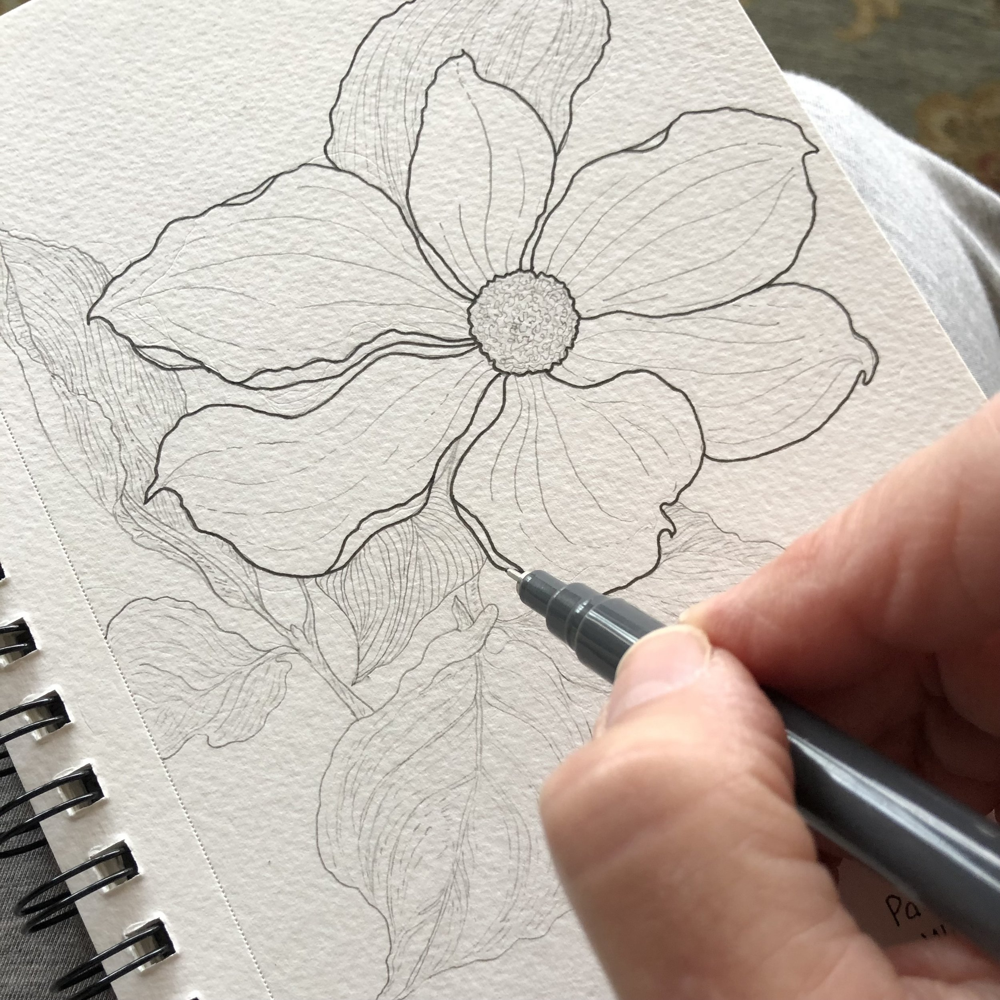
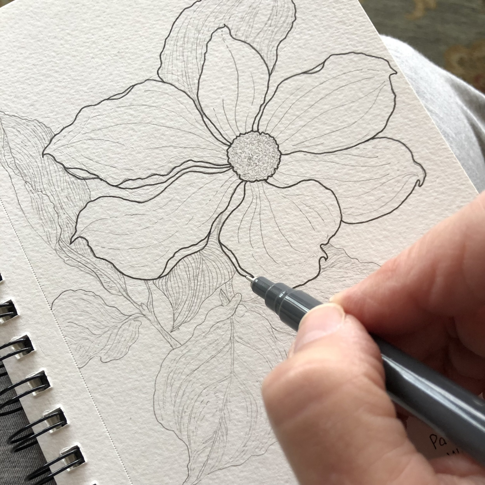

Welcome! My name is Kayla Tizon, and I am an IT Student currently pursuing my studies at CvSU - Bacoor Cavite Campus. Residing in Las Pinas City, age 20 y/o.
Beyond my studies, I find enjoyment and balance in several key hobbies. Music is a significant passion, whether I'm playing the guitar or simply immersing myself in listening with headphones. The companionship of my pets, including cats and dogs, brings immense joy and comfort to my life. I also have a keen interest in photography, which allows me to capture moments and perspectives of the world around me. These activities provide a valuable creative outlet and help me relax and recharge.